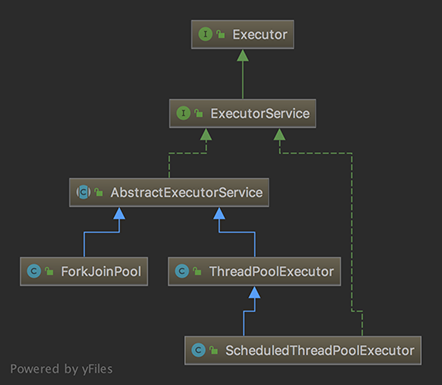

线程池

API
Constants
int类型，一共32位，其中前三位代表线程池的状态runState,后29位表示工作线程的数量workerCount。
1 | // 控制参数 |
Executors
1 | public static ExecutorService newFixedThreadPool(int nThreads) { |
Methods
1 | public void execute(Runnable command) { |
根据当前线程池状态，检查是否可以添加新的任务线程。如果可以则创建并启动任务，一切正常返回true，返回false可能是以下原因：
（1）线程池没有处于RUNNING状态
（2）线程工厂创建新的任务线程失败，即大于poolSize
1 | private boolean addWorker(Runnable firstTask, boolean core) { |
1 | final void runWorker(Worker w) { |
1 | private Runnable getTask() { |
1 | private final class Worker |